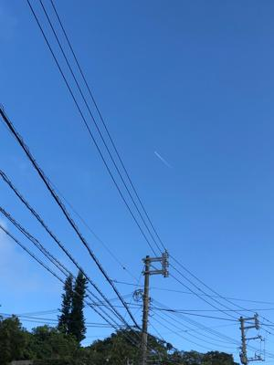
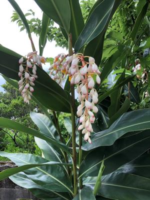

うるがいの話 ある日
最新: 予約変更【うるがいの話 ある日】とは 一日だけのプログです
『うるがいの話』の最新一日だけのプログで、通信料が少なく経済的だ。カニの画像をクリックすると全ての日付が載る『うるがいの話』サイトを表示します
|
|
【うるがいの話】 うるがい(ｳﾙｶﾞｲ urugai)とは、『もずくがに』の名前でとても大きくなります。 |
|---|---|
|
|
【カミマヤーの話】 猫のことを方言でマヤーといいます。カミマヤー（kamimayaa）とは、神の猫のことです。 |
|
【たながぁの音楽】 たながぁ（ﾀﾅｶﾞｰtanagaa）とは手長えびのことで、何種類かあり大きいのは車 エビぐらいになります。 |

|
【ぶながぁの話】 ぶながー(bunagaa)とは、赤い髪の毛、赤い身体、そして身長は１ｍ２０ｃｍ ぐらい、川の蟹を食べているの目撃された。場所は沖縄県国頭郡大宜味村のと ある村僕の隣近所に住んでいる爺さんから、聞いた話です。 |
|
|
【ギーマの話】 ギーマ(giima)とは、山原の里山に咲くスズランに似た、 花を付けます。実は食べられます、 気が付くと口の周りが紫になっています。 |
2022年04月30日 (土）予約変更
16:58

来月コドモが乗る予定の飛行機を、ネットで変更する事にした。ところがであ
る、「ウェブサイトではお取り扱いできません、サービスセンターへ電話する
ように」と受付を断れる。２度目である、電話で変更手続きをする。かかった
通話時間は１２分４４秒（携帯電話：２０秒１０円で３８２円）、なぜネット
で変更できなかったのですかと問うと、前回私がネットで変更したときにステ
ータスがおかしくなったので・・・と言われた。よく分からないが、どうも航
空会社のシステムの不具合のようである。ん、なんだがおかしい。次回この予
約はネットで変更できますかと尋ねると、変更できますと言われた。ふーん。

念願のプログ過去履歴ログの切り出し作業を、プログラム６本で対応できるよ
うにする。投資効果、ア～微妙（数時間が、数分に短縮、しかも正確）。
１６時５２分 ビットコインの総資産 ￥１４、５５３↓